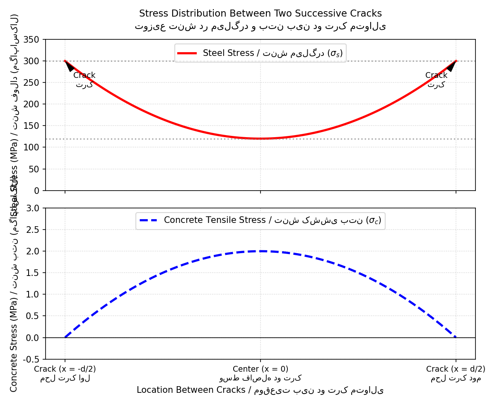
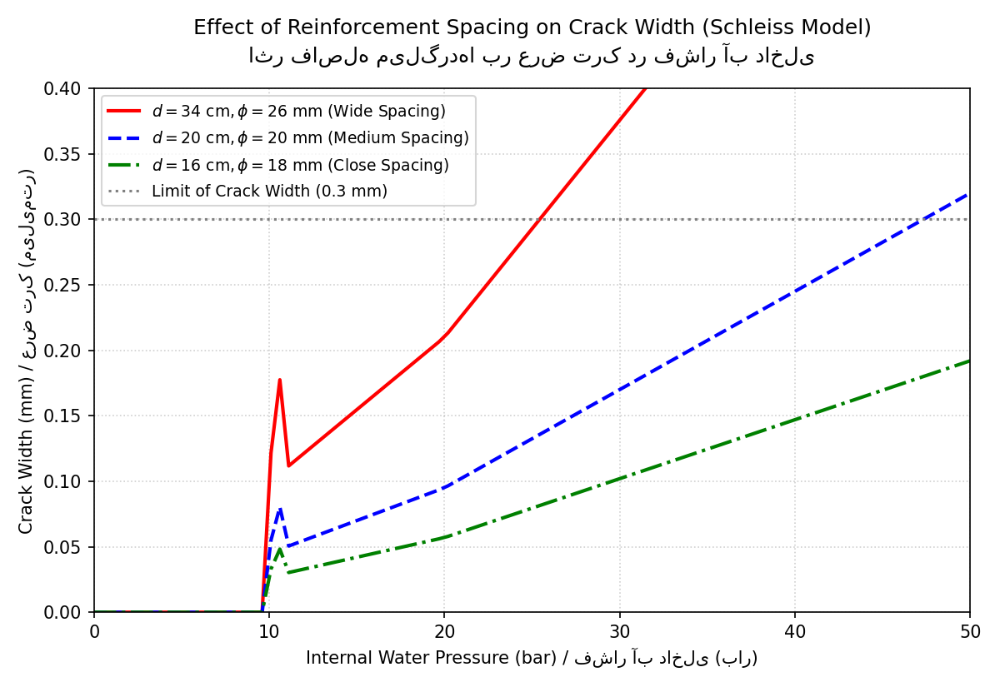

BOOK ID: SCH-1997 · CLASSIC HYDROPOWER PAPER
توسعه یافته بر اساس روش پروفسور آنتون اشلایس (Schleiss, 1997)
ابزار تحت وب آنلاین دوزبانه (فارسی/انگلیسی) برای تخمین زنده عرض ترکها، میزان نشت آب و کنترل تنش میلگردها بر اساس دکمههای لغزنده ورودی.
کتاب جامع دوزبانه حاوی مبانی تئوری مدل ۳ ناحیهای، فیزیک ترکخوردگی بتن و تشریح ریاضی گامهای آییننامهای اشلایس.
اسکریپت شیءگرا و جامع محاسباتی به همراه توابع بررسی پایداری هیدرولیکی برای استفادههای تخصصی کلاسی و توسعه دفترچه محاسبات.
طراحی پوششهای بتنآرمه برای تونلها و شفتهای انتقال آب تحت فشار، تحت تاثیر اندرکنش شدید سازهای و ژئوتکنیکی قرار دارد. پروفسور اشلایس در مدل مشهور خود، کل محیط را به **سه زون استاتیکی-هیدرولیکی** تقسیم میکند:
توزیع تنش کششی در میلگردها و بتن بین دو ترک به صورت **سهموی** محاسبه میشود. به علت پدیده چسبندگی (تنش پیوند)، تنش بتن در وسط دو ترک بیشینه شده و در صورت تجاوز از مقاومت کششی، سریهای جدید ترک شکل میگیرند.


اسکریپت آفلاین پایتون به صورت شیءگرا طراحی شده و الگوریتم تکرارشونده ۸ مرحلهای اشلایس را برای ارزیابی پایداری و نفوذپذیری سازهای حل میکند.
numpy (در صورت عدم نصب، دستور زیر را در خط فرمان وارد کنید):pip install numpy
با ایمپورت کردن کلاس طراحی، میتوانید پارامترهای هندسی متغیر پروژه خود را وارد کرده و خروجی بگیرید:
from scripts.pressure_tunnel_calc import PressureTunnelDesign
# ۱. راهاندازی کلاس با پارامترهای ژئوتکنیکی و شعاع تونل
calc = PressureTunnelDesign(
r_i=1.8, # شعاع داخلی پوشش به متر
r_s=1.9, # تراز قرارگیری میلگردها
r_o=2.1, # شعاع خارجی پوشش بتنی
E_r=4.0 # مدول سنگ به گیگاپاسکال
)
# ۲. اجرای فرآیند محاسبات کوپله برای فشار آب مشخص، گام آرماتوربندی و قطر میلگرد
results = calc.calculate_state(
p_i_bar=30, # فشار آب داخلی (بار)
spacing_cm=16, # فاصله میلگردها (سانتیمتر)
bar_diameter_mm=18 # قطر میلگردهای انتخابی (میلیمتر)
)
print(results)
اگر خروجی محاسبات را برای دو فاصله میلگرد ۳۴ سانتیمتر و ۱۶ سانتیمتر مقایسه کنید، مشاهده میکنید که علیرغم استفاده از درصد فولاد یکسان، میلگردهای نزدیکتر عرض ترک را تا ۷۰ درصد کاهش داده و از مرز تخریب سازهای دور نگه میدارند.